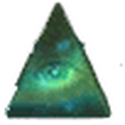
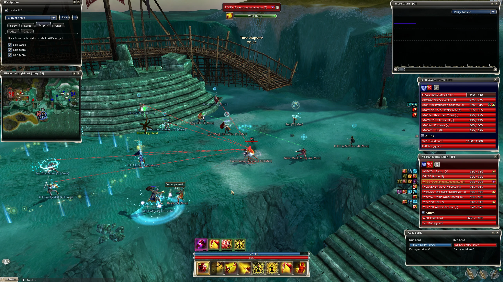
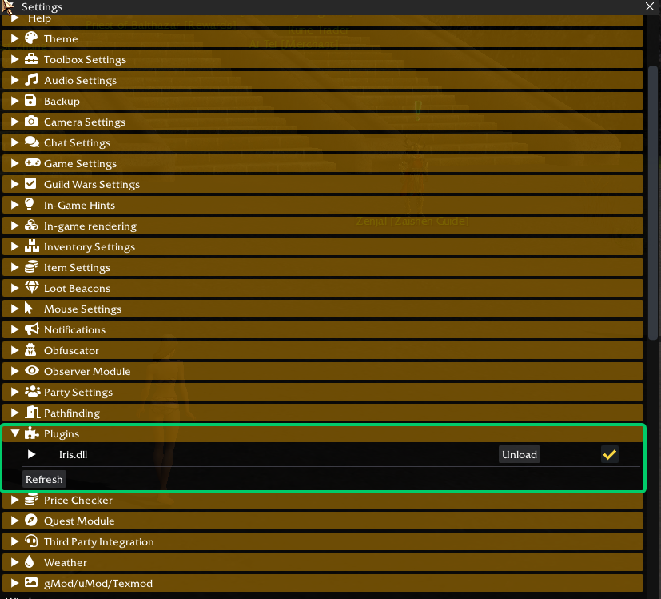
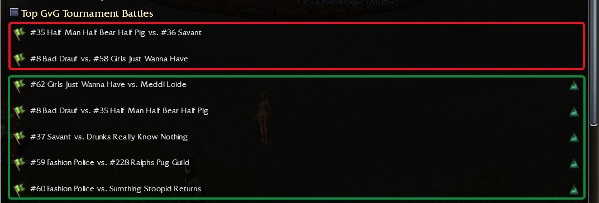
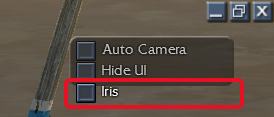

We built Iris for people who enjoy watching matches in game, but don’t always have the time, or the desire, to open a replay in GW Observer. Our goal is simple: make in‑game matches easier to follow, understand and enjoy.
A module for GWToolbox++

More insight. Right inside Guild Wars.
Enjoy watching matches in Guild Wars Observer Mode? Iris adds HUD panels that help you follow the action, without needing to open GW Observer.
Whether you’re settling in for a full match or dropping in for a quick watch, Iris brings useful match information into your in‑game viewing experience.

GW Observer records matches. Iris uses data from those recordings and synchronizes it with the match you’re observing inside Guild Wars.
When recording data is available for your match, Iris can display additional information about players, skills, energy and effects alongside the action.
A note about accuracy. Energy values and effects shown by Iris are calculated from match events, rather than directly recorded.
They may contain errors or differ from the actual game state. Treat them as a guide, rather than exact values.
You do not need to install or run GW Observer.
Two parts: copy the file once, then load it once in GWToolbox++. After that Iris starts by itself every time.
Iris.dll with the button below.Iris.dll in the plugins folder of your GWToolbox++ settings folder: Documents\GWToolboxpp\<your computer name>\plugins\.Iris.dll. GWToolbox++ remembers it: you only do this once.
Iris.dll the button reads Unload.

Disclaimer. Plugins are not supported by ArenaNet, nor by the GWToolbox++ developers. Use Iris at your own risk.
We built Iris for people who enjoy watching matches in game, but don’t always have the time, or the desire, to open a replay in GW Observer. Our goal is simple: make in‑game matches easier to follow, understand and enjoy.